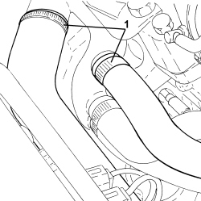
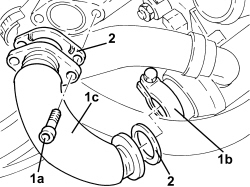
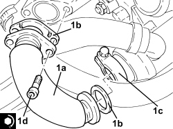
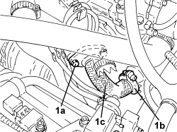

1080C83 EXHAUST GAS INLET PIPING FROM EXHAUST MANIFOLD TO HEAT EXCHANGER EGR - R R
- Path
- Procedures > 10 ENGINE > 1080 EMISSION CONTROL SYSTEM > 1080C EXHAUST GAS RECIRCULATION SYSTEM (E.G.R.) > 1080C83 EXHAUST GAS INLET PIPING FROM EXHAUST MANIFOLD TO HEAT EXCHANGER EGR - R R
- Kind
- repair procedure (removal / refitting; the operation number is the code)
- Applies to
- engines: 1.9 JTD 8V, 1.9 JTD 16V, 2.4 JTD 20V; all production periods
- Interactive page
- https://sloeber94.github.io/elrnDB/alfa/159/en/#/939010637
Applies to: engines: 1.9 JTD 8V, 1.9 JTD 16V; all production periods
 Removing
Removing
 Refitting
RefittingOp. 5530B52 BATTERY SUPPORT/DRIP TRAY - R.R
Op. 0010T20 ENGINE COOLANT - CHANGE
Op. 1088D14 UPPER RADIATOR COOLANT OUTLET HOSE - R.R.
1. Loosen the bands and remove the pipes from the return manifold to the water pump.

Applies to: engines: 1.9 JTD 8V, 1.9 JTD 16V; all production periods
1. Loosen bolts (1a), loosen collar (1b) and remove the pipe (1c).
2. Remove the relative seals.

Applies to: engines: 1.9 JTD 8V, 1.9 JTD 16V; all production periods
Refitting
Removing1. Position the pipe (1a), complete with seal (1b), in its housing and secure it by tightening the collar (1c) and the bolts (1d) to the recommended torque.
Component | Fastening | dia | Value (daNm) | Validity |
|---|---|---|---|---|
Exhaust gas/water heat exchanger for E.G.R. system | Bolt | M8 | (exhaust manifold side) 2.3 - 2.8 | 1.9 JTD 8V 1.9 JTD 16V 2.4 JTD 20V |

Applies to: engines: 1.9 JTD 8V, 1.9 JTD 16V; all production periods
- Place the pipes from the return manifold to the water pump back in their housing and secure them with the relative bands.
Applies to: engines: 1.9 JTD 8V, 1.9 JTD 16V; all production periods
Op. 1088D14 UPPER RADIATOR COOLANT OUTLET HOSE - R.R.
Applies to: engines: 2.4 JTD 20V; all production periods
Removing
RefittingOp. 1016A10 SOUND-PROOFING COVER - R.R
Op. 1048A42 SLEEVE FROM FLOW METER TO TURBO CHARGER AIR INLET PIPE - R + R
Op. 1048A51 TURBOCHARGER RIGID AIR INLET HOSE - R.R.
Op. 7055B54 UNDER ENGINE PROTECTION/GUARD - R.R.
1. Loosen the bolts (1a), loosen the collar (1b) and remove the the pipe (1c).
- Remove the gaskets.

Applies to: engines: 2.4 JTD 20V; all production periods
- Place the pipe in its housing complete with new gaskets, tighten the bolts to the recommended torque and the collar connected to the E.G.R. heat exchanger.
Component | Fastening | dia | Value (daNm) | Validity |
|---|---|---|---|---|
Exhaust gas/water heat exchanger for E.G.R. system | Bolt | M8 | (exhaust manifold side) 2.3 - 2.8 | 1.9 JTD 8V 1.9 JTD 16V 2.4 JTD 20V |
Op. 7055B54 UNDER ENGINE PROTECTION/GUARD - R.R.
Op. 1048A51 TURBOCHARGER RIGID AIR INLET HOSE - R.R.
Op. 1048A42 SLEEVE FROM FLOW METER TO TURBO CHARGER AIR INLET PIPE - R + R
Topics linked from this page (8)
- 0010T20 ENGINE COOLANT - CHANGE
- 1016A10 SOUND-PROOFING COVER - R.R
- 1048A42 SLEEVE FROM FLOW METER TO TURBO CHARGER AIR INLET PIPE - R + R
- 1048A51 TURBOCHARGER RIGID AIR INLET HOSE - R.R.
- 1088D14 UPPER RADIATOR COOLANT OUTLET HOSE - R.R.
- 5530B10 BATTERY - R+R
- 5530B52 BATTERY SUPPORT/DRIP TRAY - R.R
- 7055B54 UNDER ENGINE PROTECTION/GUARD - R.R.